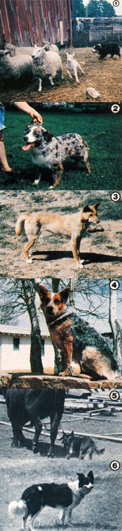

In issues 69 and 73 we discussed protection dogs . . . but if you need canine assistance to round up your farmstead livestock rather than to guard it from predators, you may prefer these . . .
A good, well-trained dog may be one of the most valuable assets any farmer or rancher can own, often spelling the difference between success and failure in an animal-raising operation. And stock dogs, products of generations of selective breeding, will-at a certain age-begin to herd other critters whether directed by a master or not. This born-in-the-bone instinct is the foundation of their training.
WHAT THEY CAN DO . . . AND WHY
It's not surprising, then, that-with proper education augmenting its own natural inclinations-a good stock dog can range out to your back 40, search out hidden sheep or cattle, and deliver them to you . . . direct a large herd of animals across open fields, through gates, and down lanes to a particular destination . . . "cut" specific animals from a group for special ministrations by the master . . . and fight, to the death if need be, to protect its charges from wandering marauders.
Of course, herding and driving, rather than fighting, are the stock dog's main vocations, and the various breeds tend to be grouped by their aptitude for one activity or the other. Both jobs depend upon the canine's normal hunting instinct . . . which in some breeds is demonstrated by the intense "eye"-or riveting stare-that the dogs level on their charges.
Herding (or "fetching") dogs circle widely to reach the back of a group of livestock . . . then bring the animals to the master by "wearing", or moving from one side to the other behind the herd or flock, keeping it together while urging it forward. Herders are especially suitable for work with animals that are often penned (sheep and dairy cows, for example), that require firm but gentle control, and that must be maneuvered with great precision through narrow openings.
Driving (or "heeling") dogs are used to direct the herd away from the master to some designated area, and are known for their skill in "gripping", or biting the heels of the stock in order to keep it moving. Individual dogs may show a preference for "heading"-that is, going to the front of a herd to stop or redirect its movement, perhaps by actually gripping the nose of the lead animal-rather than (or in addition to) heeling.
A breed's predilection for either herding or driving reflects, to a great extent, the character of its region of origin. Scotland and England, for example, have rugged hills and harsh weather . . . fenced pastures, narrow lanes, and numerous gates to be negotiated . . . and many small farms with sheep and dairy cows that are brought in nightly to yards and byres. From such surroundings came the peerless border collie, unmatched for its almost exquisite herding control of oft-penned livestock.
In Australia, on the other hand, an aggressive driving dog is needed to move the often wild (or near-wild) cattle for long distances over vast grazing plains-and through skin-searing heat-to a market or pickup point. The Queensland blue heeler was developed to meet such needs, and is rapidly growing in popularity in the western United States.
WHAT TO LOOK FOR
Aggressiveness without viciousness is one of many qualities typical of a good stock dog. Others include the all-important desire to please the master (and therefore to put the herd where the owner wants it), eagerness to work, the habit of doing its job in silence unless circumstances demand otherwise, versatility, an even temperament, and stamina. Together with a strong herding or driving instinct and special "style", these qualities of character-rather than any particulars of conformation or color-are the goals of the reputable breeder. If it's a working dog you want, then, your best bet is to buy a pup of one of the popular stock varieties (see the accompanying sidebar) from just such a person.
Once you've selected the breed of dog that best suits your purposes, pick out a puppy that's robust, healthy, and outgoing. Some knowledgeable buyers-when examining a litter-always choose the first tailwagging pup to greet them, as it's likely to be the most fearless worker and the easiest to socialize (that is, to accustom to people). You should, of course, take the youngster to a vet to be certain that it is healthy and to begin its vaccination and worming programs (which may start before six weeks of age). Then-just as you'd do for any other pup-provide it with good food, fresh water, and a comfortable place to sleep. Give the animal a lot of attention, too . . . and when it's four to six months old, you can ease it into some basic instruction.
TRAINING
Most people don't begin stringent training until a pup is about nine months old, but there are many simple commands that even a "beginner" can learn. No matter what type of dog you own, it must be taught to respond-without hesitation-to the order "COME". Another important command, and one that's especially relevant to the stock dog, is "DOWN" ... which means "lie down this instant". "SIT" , "STAND", and "STAY" are also basics that will make any canine more enjoyable to live with.
There are many fine books on dog training techniques. The North American Sheep Dog Society (Dept. TMEN, 210 East Main Street, McLeansboro, Illinois 62859) carries some that are aimed specifically at training stock dogs: You can write the society for information and a list of titles and prices.
In general, however, the beginning owner/trainer should be aware that a dog associates a command with whatever it is doing at that moment, and that-for instance-if you continue shouting "COME!" to a runaway puppy, it might quite sensibly assume that you mean "gallop off into the trees". When training a young dog, keep the lessons short and end each session on a note of success, saying "good dog" when you stop. And finally, although it may take patience, you should remember that a puppy-like a child-cannot be truly disobedient (and therefore shouldn't be punished) until it fully understands what it is supposed to do.
The ideal time to begin training an animal for actual stock work is when the pup first gets its ability to "eye" (that is, stare the livestock down) or, in the case of breeds without this characteristic, at nine or ten months of age. The best procedure is for owner and dog to work with a professional trainer, each learning how to perform effectively as part of a team.
LIVING WITH A STOCK DOG
Once you've gotten through training and have yourself a working dog, you'll find the animal to be a very practical addition to your farmstead. The matter often transcends practicality, though. A well-trained stock dog and its handler working together become as one, the dog recognizing their common goal and responding to the wishes of the master almost before the commands are issued. Such an association is not merely "practical" . . . it is a thing of beauty.
STOCK DOG BREEDS
It would be impossible, in the space here, to do justice to the many fine herding and driving breeds in use today, but the following information should at least serve to introduce some of the stock dogs available.
B order Collie. This top-rated herding breed is "standardized" by its distinctive run-and-crouch working style and superlative "eye"; rather than by any specific details of conformation. The usual type, however, is familiar to most people: It stands about 20 inches tall and weighs 30 to 40 pounds, and has a medium to long coat (black with white trim), a long tail, and laid-back ears. Extremely alert, intelligent, and energetic, the border collie is at its best with "dog-broke" (as opposed to wild) stock and is capable of extraordinary finesse in handling its charges. Be warned, though . . . untrained dogs may take to "herding" automobiles!
Australian Kelpie. Well known in Australia, where it was developed by crossing the wild dingo and the border collie, the kelpie is also a herding dog. Small (17 to 20 inches tall, 25 to 30 pounds), almond-eyed, and somewhat foxlike in appearance, kelpies may come in a variety of colors (although black is quite common). These dogs are known for their alertness and intelligence, and for their habit of occasionally walking across the backs of a flock of sheep in the course of their work!
Australian Cattle Dog: This is a driving breed, also known as the Queensland blue heeler. Compact and hardy, the dogs are the result of crosses between the dingo, the smooth-haired blue merle collie, the Dalmatian, and the kelpie. Pups are born white and acquire color with age, usually a peppered blue or red with tan trim. A cattle dog is typically a bit stouter than a kelpie-averaging about 18 inches in height and weighing 30 to 35 pounds-and has prick ears, a wedge-shaped head, a medium-long coat, and a long bushy tail. Because of the breed's skill in managing steers, it is beginning to attract the interest of American cattle ranchers.
English Shepherd. This beautiful dog is a familiar sight to many people who think of it as a collie cross. Long-tailed and long-haired, with "feathered" legs and laid-back ears, the English shepherd is commonly black with tan trim (including a "penny" dot over each eye). At a height of 18 to 22 inches and a weight of 50 to 60 pounds, it's considered both a versatile heeler and a good all-round farm dog.
Australian Shepherd. With both a bobtailed dog and a blue merle collie in its background, the handsome "Aussie" is usually tailless and often strikingly colored. The latter feature may prove to be its downfall as a practical choice for ranchers if buyers begin to demand-and breeders consequently to aim for-merle (mottled blue gray) or tricolor dogs rather than animals with top working ability. Aussie merling, you see, carries an albino gene, which can develop into deafness and/or blindness in later life . . . and these are problems that will likely become more common if breeding for color gains in popularity. (A pup with excessive body-not trim-white is likely to have the genetic defect.) As the photo shows, Aussies-which can herd or drive-came in beautiful solid colors as well.
Catahoula "Leopard" Dog. The "cat" is a strong driving breed, somewhat houndlike in conformation, that may sport a variety of colors . . . including spotted and merle, with pale eyes. (Selecting for color over ability could create problems for this canine breed, too.) The state dog of Louisiana since 1979, but little known outside its home area, the catahoula has a distinctive working style that involves-among other things-circling livestock at great speed to keep the animals under control. These dogs-which one owner calls "walking sledgehammers"-may actually hurl unruly stock to the ground . . , a habit that causes them to be considered too rough by many trainers' standards, but makes them particularly effective in dealing with rank (wild) cattle.
There are, of course, a number of other herding and driving breeds . . . including the Shetland sheepdog (or "sheltie'), the pull, the McNab, the German koolie, the Belgian sheepdog, and the briard. For mare information, readers may wish to contact the National Stock Dog Registry, Dept. TMEN, Route 1, Butler, Indiana 46721.
|
 [1] Australian shepherd Topnotch Trampus works the sheep. [2] A blue merle ""Aussie"". [3] Progenitor of many stock dog breeds: a wild dingo. [4] A blue Australian cattle dog surveys its territory. [5] A blue heeler keeps the bovines in line. [6] Border collie Elles Belles. |
|
|